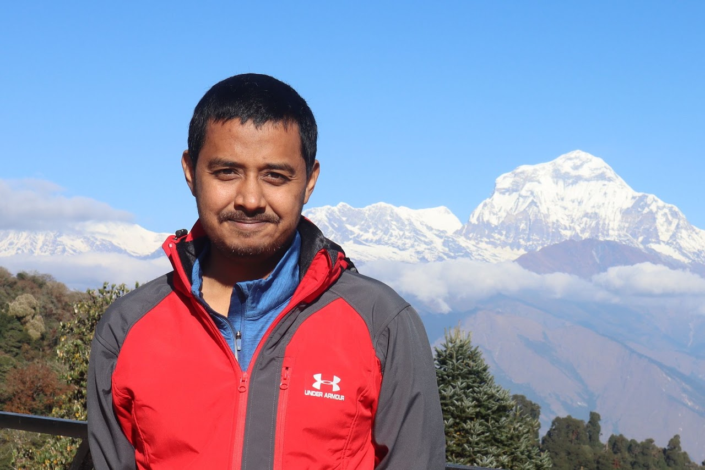

About
Masum Billah
I report from Dhaka, where a morning can hold the country's largest griefs and its smallest, most stubborn ones at once. For a decade I have followed the people the headlines tend to walk past: the worker sold across a border, the family still counting who came home, a coastline losing its long argument with the sea.
My reporting on migration, climate, and power has run in The Guardian, Al Jazeera English, Nikkei Asia and, for years, The Business Standard; I now file for The Daily Waadaa and as Bangladesh correspondent for International News Services. “Sold in Cambodia,” an investigation into how Bangladeshis are lured into slavery, was named by the Global Investigative Journalism Network among the country's best of 2022 and carried the 8th BRAC Migration Media Award.
I came to journalism by way of literature, an English degree that taught me a sentence can also be a kind of evidence. When the deadlines loosen their grip I walk uphill, toward the higher trails of the Himalaya, a camera and a slower way of looking. And I am father to a small boy who is, so far, my most exacting editor: the one story I will never file, and the only one I am helplessly glad to be living.
Beats & expertise
Accolades
- 8th BRAC Migration Media Award2023
- Global Investigative Journalism Network2022
Education
- MA, International RelationsUniversity of Dhaka
- BA (Hons), EnglishUniversity of Rajshahi
Languages
Elsewhere
On the record
- ReporterThe Daily Waadaa
- Bangladesh correspondentInternational News Services (INS) · Nikkei Asia (independent)
- Senior feature writer (former)The Business Standard
Get in touch
Tips, commissions, and conversations.
Open to freelance commissions, collaboration on cross-border investigations, and speaking on migration, climate, and the Bangladeshi press.
Working on something sensitive? Email first and we can arrange an encrypted channel before you share anything.